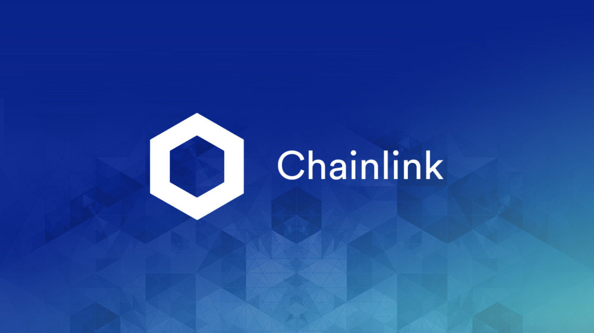
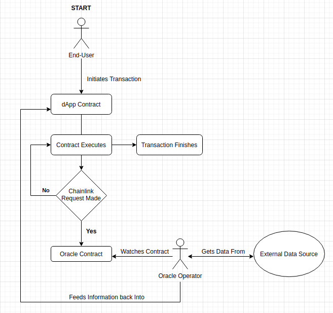

Chainlink (LINK)¶
Introduction¶
The blockchain is an island, lost in the endless sea of the internet. Despite our interconnected world, it has no connection to the rest of the internet. In its base form, it cannot interact with other servers, API’s, or even other blockchains. Then oracles were created. Named after the Greek women whom imparted essential knowledge, they are the link between the blockchain and the rest of the internet. They are an integral part of any smart-contract-based cryptocurrency, unlocking a whole new world of application capabilities and ideas. If smart contract applications are going to help us “decentralize the world”, they’ll need oracles to do it.
Among oracles, Chainlink is the undisputed king, with no major competition in sight. The use cases are endless, and many of your favorite applications may already use them without you knowing. Thousands of dApps have already integrated them into their code, with dozens of other non-crypto-based companies signing up to be a part of it. Chainlink services are perhaps the most integral utilities on the Ethereum platform today, and growing to new chains and sectors everyday.
Insurance contracts, tokenized assets, casinos and video games, and so many more, all rely on the essential information chainlink provides them with. If you are at all interested in becoming a developer, a user of dApps, or just a fan of cryptocurrency you should know what it is and the role it plays in the decentralized ecosystem. It isn’t the flashiest idea, and is often overlooked, but its value cannot be understated.

Blockchain Isolation¶
The Problem¶
Hold on, when I submit my transaction i’m sending it over the internet, how can the blockchain not connect to the internet
Yes, this is true but it’s not about the node, its about the blockchain itself. Follow me here. When you Send a transaction to a node, what you are really doing is sending a request for the node operator to perform a series of calculations and publish the result of those calculations to the blockchain. The node operator is really running a program called the Ethereum Virtual Machine (EVM). This program does all the heavy lifting of the blockchain. The node operator takes your incoming request and feeds the information into the EVM. The EVM takes this information, processes it, and adds the resulting info to the blockchain. The EVM is deterministic. This is a term in computing that means that it has a very specific number of results, and given a specified input will always return 1 specific output. The EVM can only take the input given to it by the node operator (which it got from you) and perform computation on it.
Why can’t the EVM use the internet capabilities of the host device to connect to the internet like my web browser does?
The reason for that is complicated, and only really matters to developers, so for the time being let’s just say it can’t, but your line of thinking will be relevant when I explain how oracles actually play into this. You can skip down to the next part of the article here.
For developers¶
If you are a developer or have a CS background, it works like this…
The EVM is really just a stack machine with a series of opcodes used to determine stack operations. When you Send a transaction you’re really sending a series of opcodes for the EVM to read and execute, where each has its own gas cost. These opcodes are different from the traditional ones you may see in assembly-code compiled from a C-program. They don’t have the same stack structure, pointers, or access to system libraries, etc. that would allow it to initiate things like TCP-handshake. When you deploy a smart contract you are really deploying the byte-code of the contract in a format that allows the EVM to read the contract as a series of opcodes. When you submit a contract transaction request you’re sending a series of specific opcodes for the EVM to process. It is because of this very limited series of actions that the EVM cannot use other system resources like wifi or ethernet. The EVM is only capable of processing those opcodes in the order it reads them and performing the relevant stack operations.
It’s designed this way for a number of reasons. One is that the EVM is made in a way such that it can be implemented in a variety of different languages and platforms without access to various system-specific resources. This makes it easier to develop in a decentralized way. These kinds of internet operations can also be very expensive in terms of performance. If a block contains hundreds or thousands of contract operations and transactions, to make thousands of internet-requests would add an enormous amount of computational overhead, even if all requests ran with perfect efficiency and zero downtime/slowdown. From a security perspective, making it essentially air-gapped makes it much more difficult and computationally expensive to exploit too, as all exploits must be from within contracts using carefully crafted payloads paid for in Ethereum. The EVM was made to be as minimal as possible and this is the result of that. This is a complicated topic that requires a complex series of other articles breaking down a variety of complex computer-architecture and networking-based subjects beyond the scope of this article. For now, just accept the premise.
Can’t the node operator just make the request I want, for me, and pass the info to the EVM?
No. This is because of the cryptography libraries that make cryptocurrency possible. When you send a transaction, you are sending a digital signature using the Elliptic-Curve-Digital-Signature-Algorithm (ECDSA). Your private key (generated from your seed phrase) signs the transaction to ensure authenticity of the transaction. The blockchain checks the signature against your known public-key and the transaction request. For the node operator to send additional-information with your transaction (from say an API request) would mean to introduce new information to the transaction. The resulting hash would not match the digital-signature and would be rejected because it could not verify the integrity and source of the transaction.
How Oracles work¶
The solution to this problem is simpler than you think, two transactions, and two smart contracts. An oracle is simply a secondary contract (used as a helper), watched off-chain, that provides information back to the first, through the help of a real-world person. It is simply someone in the real world, watching the blockchain and waiting for someone asking for information. If you’ve been watching Marvel’s What If, think of it like the watcher, except they actually do interfere.
{kind=link}
Or, if you’re not a dork like me, think of it like Reddit. You post a question, and someone replies on the public thread with the answer you are looking for. Except, in this case, the threads are smart contracts.
- The process goes like this:
- A smart contract wants a piece of information, for any reason, but doesn’t have it on-chain anywhere. It needs to get it from a service off-chain, like say the current temperature in New York City, NY in Celsius.
- A smart contract makes a request to a public oracle. This is a well-known and pre-defined smart contract run by an oracle service. One contract makes a request to a function on this oracle contract with the information it is requesting. If it is an API, they may include the URl, the parameters, etc. They also include the instructions for where to submit the results. This is a separate function in the same contract, written only to deal with the new incoming-information
- A program (the oracle software), off-chain and connected to the internet, watches the blockchain for all incoming transactions to this contract. When they find a new transaction, they go out and get the information from the requested source.
- The off-chain software initiates a new on-chain transaction with the original “callee” contract. This transaction includes the information they obtained at the request of the transaction viewed earlier. It signs the transaction and pays the associated gas cost to have it confirmed. This information is submitted to the contract and function defined in the original “oracle request” from step 2. This is how the program knows where to send the information to.
- Our original contract receives the requested information, and continues as normal doing whatever it was written to do once receiving it.

As you might have noticed, the oracle service provider has to submit a transaction, and pay the gas cost associated with every request. This can be expensive for them, so they naturally want some kind of compensation for the gas they’re spending, alongside the cost of running the nodes and software. This is where the chainlink token (LINK) comes into play. For every request made to an oracle, the person making the request has to pay the oracle-operator in the LINK Token. The amount paid per-request is determined between the operator and the requester. This creates a form of market where things like bulk-pricing are common for frequent-use. The payment is made at the time the request is made. This means the contract making the request needs to have a sufficient number of LINK in its possession at the time it makes the request to the oracle. If it does not, the oracle request will fail.
The LINK token’s sole purpose is to be exchanged for the use of oracle services. When you make a Chainlink request, you must pay the oracle-operator in LINK tokens only. That means that with a set amount in circulation, the price of the token is a reflection of the demand for oracle-services. That may change in the future, but right now that is the only use for the token. It can be traded like any other token, but being traded in exchange for off-chain information is its main utility.
You may also notice that the initial request needs to be sent to a specific oracle. The request is made to a specific smart-contract, where you may have already set up an agreement with the operator to perform your request. Many prices are pre-defined, but specific arrangements can be made in the case of requesting specific information or for bulk-pricing. This creates an interesting world where node operators can start to specialize in the type of content offered. Some nodes are run by big companies. For example AccuWeather, the weather service, operates a Chainlink Oracle. By using their specific oracle you may be able to access certain data faster, at lower fees, and more reliably. If you request data from a paid-service, like a private API, the node operator may pass the price of accessing that data API on to you. If you notice the node you request data from keeps returning unreliable data, then you are free to go to a different one that is more reliable. This kind of system in turn created an entire market of node operators meant to fit your needs, all publicly accessible from Chainlink’s Website. There’s also a reputation system for oracle-operators to be evaluated by consumers. As a customer, there’s a variety of resources to help you find the best node for your dapp, based on factors like cost, reputation, and uptime.
Example Use cases¶
Now that you know how oracles work, it’s useful for me to walk you through some of the exciting ways these can be integrated now into Ethereum and a variety of other blockchains.
Insurance¶
Let’s imagine you’re a farmer, who wants to take out a crop insurance policy in the event of a bad harvest. You sign a policy with a company that says “if it rains less than 10 inches this year, then the policy should pay out X amount”. You and the insurance policy provider create a smart contract on the Blockchain. The provider puts in the payout up-front, or a request to retrieve it from somewhere else should the need arise. Every month you (the farmer and policy holder) send a certain amount of money (the premium) to this contract. The contract holds it and then slowly pays it out to the insurance provider. If the policy-holder misses a payment, the contract takes note and won’t pay out any benefits until payment continues. Every few weeks the contract makes a request to a chainlink node for some weather information on the area defined in the contract. It may ask a weather service API, or it may use things like IoT devices (like an internet-connected rain collector out in your field). It gets the information from the oracle, and sees how much rain has fallen. If it’s less than the pre-defined rules of the policy, then it takes steps to pay out the specified amount to the policyholder.
- This is obviously a very simplified detailing of events, but it has a few benefits:
- Trust. Since the contract is the middle-man, you can feel confident that if conditions are met, you will get the specified payout. Unlike our current system, with complicated legal-ese and a system of lawsuits to enforce policies, this system has none of that. The contract is able to act autonomously, and both sides can be confident they will get their payment. There is no ambiguity as the rules are clearly defined, and transparent to all. You don’t need to worry that the insurance company may screw you out of the money you are owed.
- Security. Records are kept, transparent to all, and can’t be modified without the other side knowing. There’s also a variety of other security-benefits to integrating blockchain technology, which are beyond the scope of this article.
- anyone can provide insurance. Because of the way contracts can solicit funds from other contracts, anyone can be an insurance-broker. By copying the code of pre-defined contracts, anyone can start their own insurance policy and sell it on the open-market. A group of people, or a DAO, could pool their funds together to fund the payout if-needed, or split the premiums by way of a proxy-contract.
- Tokenization - By tokenizing contracts, they can be used in other ways. If you are the policy-provider, you could tokenize the contract and sell it to someone else, so that they could collect the premiums. You could tokenize the contract and use it as leverage or collateral on DeFi, as a result of its passive-income. This can all be done in a decentralized way.
These are just a few of the benefits but it illustrates that there’s a lot of value in decentralizing things.
Gaming¶
- Casinos - Computers, blockchains specifically, are what’s known as “deterministic”. This means that given a particular input, with the same conditions will always return the same output. The blockchain is deterministic. This means that because it can only create a pre-determined output, there is no such thing as randomness. For online gambling, this is a problem. Chainlink utilizes something known as Verifiably-Random-Function (VRF) to solve this. Determinism is a complex subject, of which you could spend an entire PhD working on, so i’m not going to go too deep into it here. What you should know is that Chainlink’s VRF system, allows smart contracts to acquire randomly-generated information that can be used in online casino applications. Using a system called Provable Fairness, contracts can solicit bets and simulate things like dice-rolls or roulette-wheels in a way that is mathematically-fair for the player. This allows the player to prove the application isn’t intentionally cheating them out of their money. This technology has existed for a long-time on online-gambling sites, but Chainlink-VRF brings it to the blockchain, allowing you to bet with your cryptocurrency directly, without needing to trust the site to hold your crypto for you.
- Prediction Markets - Prediction markets are basically sports-books, but with bets on any real-life event. Want to bet on the outcome of an election? On what the price of gas will be? Or who will win the Oscar this year? All of those can be done on a site like Augur. Chainlink works with these prediction-markets to feed in the outcomes of various bets. Let’s say you wanted to place a bet on whether or not the price of Oil was above or below a certain dollar-value. Using Chainlink’s oracles, the market-contract would simply get the price at the time of outcome from oilprice.com, and using the result pay out the rewards accordingly. It removes the need for a bookie, and allows everyone to trust they will get their payment.
- Item Trades - Games like Counter-Strike Global Offensive, have a very robust system built around buying-and-selling in-game items. The auctioning and trade of these items is typically monitored and mediated by Steam, the marketplace the game sells on. Using Chainlink, you could faciliate this same system using off-chain data like appraisals and real-time market data on supply-and-demand. This takes out the need for the intermediary, who can arbitrarily decide to suspend your account, block your trades, and separate you from your items.
- Dynamic NFT’s - Randomness functions allow you to mint NFT’s with a sense of randomness, making certain ones more rare. This allows all of them to be procedurally-generated, and completely unique. You could create an NFT that is a reflection of a real-world item. Let’s say you wanted to make an NFT representing an expensive-painting. The information on the NFT and the NFT itself would change, based on the real-world status of the item. You could make a playing-card NFT for an athlete’s career, where information changes based on team and statistics.
DeFi¶
- Tokenized assets - Projects like Synthetix create what is known as a tokenized-asset, which is a digital representation of a real-world item. In their case, it’s a token representing a real-world security (like stocks). Using oracles, their protocol allows these tokens to retain the same value as their real-world counterpart. This is partially done by using off-chain data to acquire its current price at the time of minting, and whenever it is exchange for a different digital-asset. If you wanted to trade a token representing one-share of AAPL, for USDC, chainlink oracles could be used to determine what the accurate exchange rate is.
- Price feeds - This same system of tokenized-assets can also empower the price feeds of other cryptocurrencies. You can use it to accurately price wrapped-tokens,. This allows you to accurately evaluate your collateral when borrowing, or determine interest rates when lending. Chainlink oracles can provide accurate pricing that allow you to use non-ethereum or non-stablecoin tokens as collateral when borrowing.
- Audited Proof of Reserves - In various custodial-systems, where someone else holds your cryptocurrency for you, Chainlink can be used to ensure that your money is safe. Acquiring off-chain data allows people to independently audit that your custodian still remains in control of your cryptocurrency. This can be used to prevent things like Fractional Reserve Practices or other fraudulent activities and scams.
Off-chain computation¶
- Encryption and privacy - Encryption is difficult for computers. While we have built ones capable of doing it very quickly, it still is computationally very difficult on machines. This is especially true on the blockchain. Encrypting and decrypting on the blockchain would be incredibly expensive. Prohibitively-so. Using off-chain sources combined with Chainlink, trusted sources can do the encryption/decryption off-chain, and then simply exchange the messages on-chain. This adds an extra layer of security and private to transacting on the blockchain.
- Identity Management - Storing data and doing complicated math and encryption is expensive, making an identity system infeasible. An identity management system can be constructed where although the individual identities are stored off-chain, you would authenticate yourself to the blockchain and it would verify your-information on-chain. This has a lot of benefits for things like combining blockchain and government. Imagine linking your cryptocurrency address to your social-security number, and receiving payouts in Ethereum or some other currency.
- Cross-Chain Bridges - The Chainlink Cross-Chain Interoperability Protocol (CCIP) creates a standardized system for developers on any blockchain to easily send data to other chains. This works by standardizing the code-methods, instead of relying on each developer and chain building their own protocols.
- Smart Contract Automation - Because chainlink nodes are constantly watching for incoming requests, they can also act based on a variety of other events. This same system allows you to build off-chain event-watchers that will execute your contract automatically. Smart contracts require that an outside-source invoke a transaction/execution. Chainlink Keepers can watch any transaction or parameter on the blockchain, and execute a desired transaction based on your set event-parameters.
Tradeoffs¶
While Chainlink might seem like the greatest thing since sliced bread, i’d like to list some of the potential pitfalls and tradeoffs in the spirit of fairness and due-dilligence.
- Monopoly Power - In its current form, Chainlink has a near-monopoly on oracle services. It’s nearest-competitor, Band Protocol, has a fraction of the market cap, and nowhere near as many partnerships. While its unlikely that the Chainlink company would do anything to harm Link and the consumers, having one company’s services be so ubiquitous is something to be warry of. I don’t ever foresee this being an issue, but in cryptocurrency, decentralizing wherever possible is key.
- Centralization Bottleneck - While anyone can run a chainlink-node, having a few nodes be in control of certain information can be bad. If only one-node provides the data from a specific service, this centralization gives them a lot of power over the contracts and people needing that information. There are market structures in place to prevent this, and the community has been very proactive in trying to prevent this issue from happening. Each individual app is responsible for deciding which node to purchase information from, making a little vigilance go a long way. However, it is a risk endemic to this technology. Similarly, the Chainlink Corporation is a for-profit entity registered to the Cayman islands. At present, there is no DAO for Chainlink, and the Chainlink corporation is the sole actor in building/maintaining the oracle software. This presents a centralization risk, but there is no current reason to be worried. Chainlink has an excellent record of transparency and trustworthiness.
- Cost - Utilizing oracles is expensive. Incredibly. It requires your contract make a series of expensive operations on other contracts, including an ERC-20 transfer. Currently, at a gas rate of 61 Gwei, the Link transfer gas-cost alone will cost you ~$15. This doesn’t even factor in the cost of the link itself, the initial-request, and what happens once the data has been acquired. Now, this cost will go down over time as gas-fees lower, with Ethereum 2.0, and because Chainlink has deployed on layer 2. As for the cost of LINK itself, the price of each request is set by the node-operators. If the price of LINK were to explode in value, node-operators would simply lower the cost of their services to a mutually-agreeable point.
Conclusion¶
I’m not going to make price predictions anymore, because I don’t think it matters. It should be obvious by now that I think this is a token worth buying, and encourage you to do so as well. Chainlink is revolutionizing the blockchain. It is arguably the single-most important coin you have never heard of. The state of Ethereum would not be where it is today without chainlink. With what they contribute to the Dapp-ecosystem, the sky is the limit. What new applications of it we will see in the coming years are anyone’s guess, but this technology will be at the forefront of what helps drive the world towards mass-adoption of cryptocurrency. The number of apps utilizing its libraries and services, and companies signing up to provide data is growing by the day, and a critical inflection point is upon us. I’ve had the opportunity to play around with many of the apps that Chainlink is helping empower, and its truly a marvel what the community has built and how far the Dapp ecosystem has come in a few short years.
I have NOT been compensated to promote any specific program or service. All opinions expressed are mine and mine alone. I am not a financial advisor nor am I responsible for any cryptocurrency lost due to the improper use of any application or program discussed here. Do your own research before using or investing in any service or application.